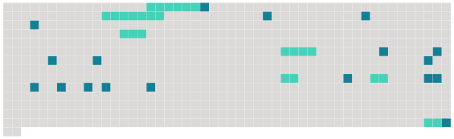

Longueur nb maillons : 25 mentions |
 |
Cependant le bruit de l'aventure qui avait amené à Saint-Front, route de Paris, [une dame en chaise de poste] [qui] croyait aller à Villiers, route de Lyon, s'était répandue dans la petite ville et y donnait lieu, depuis quelques heures, à d'étranges commentaires. Par quel hasard, par quel prodige, [cette dame de la chaise de poste] , après être arrivée là sans le vouloir, se décidait [-elle] à y rester toute la journée?? et que faisait [-elle] , bon Dieu!! [1 phrases] ? comment pouvait [-elle] les connaître?? [2 phrases] , vit ou crut voir passer et repasser derrière les vitres de cette maison [la dame étrangère] , vêtue singulièrement, disait -il, et même magnifiquement. [3 phrases] Elle ne savait rien, elle n'avait rien entendu, rien compris ; mais [la personne en question] était fort étrange, selon elle. [Elle] faisait de grands pas, [parlait] avec une grosse voix, et [portait] une pelisse fourrée qui [la] faisait ressembler aux animaux des ménageries ambulantes, soit à une lionne, soit à une tigresse ; la servante ne savait pas bien à laquelle des deux. Le secrétaire de la mairie décida qu' [elle] était vêtue d'une peau de panthère, et l'adjoint du maire trouva fort probable que ce fût la duchesse de Berry. [3 phrases] Il ordonna au maître de poste de ne délivrer de chevaux à [l'étrangère] que sur le vu de [son] passe-port. [L'étrangère] , se ravisant et [remettant] [son] départ au lendemain, [fit] répondre par [son] domestique qu' [elle] montrerait [son] passe-port au moment où [elle] redemanderait des chevaux. [10 phrases]
La mairesse tint conseil avec les femmes des autres autorités, et il fut décidé que M. le maire irait en personne, avec toute la politesse possible, et s'excusant sur la nécessité d'obéir à des ordres supérieurs, demander à [l'inconnue] [son] passe-port. |
 |
La ressource peut être téléchargée sur la page Ortolang
Si vous avez des questions ou vous voyez des erreurs, merci d'envoyer un mail à silvia.federzoni89@gmail.com
Site développé par S. Federzoni (contact)